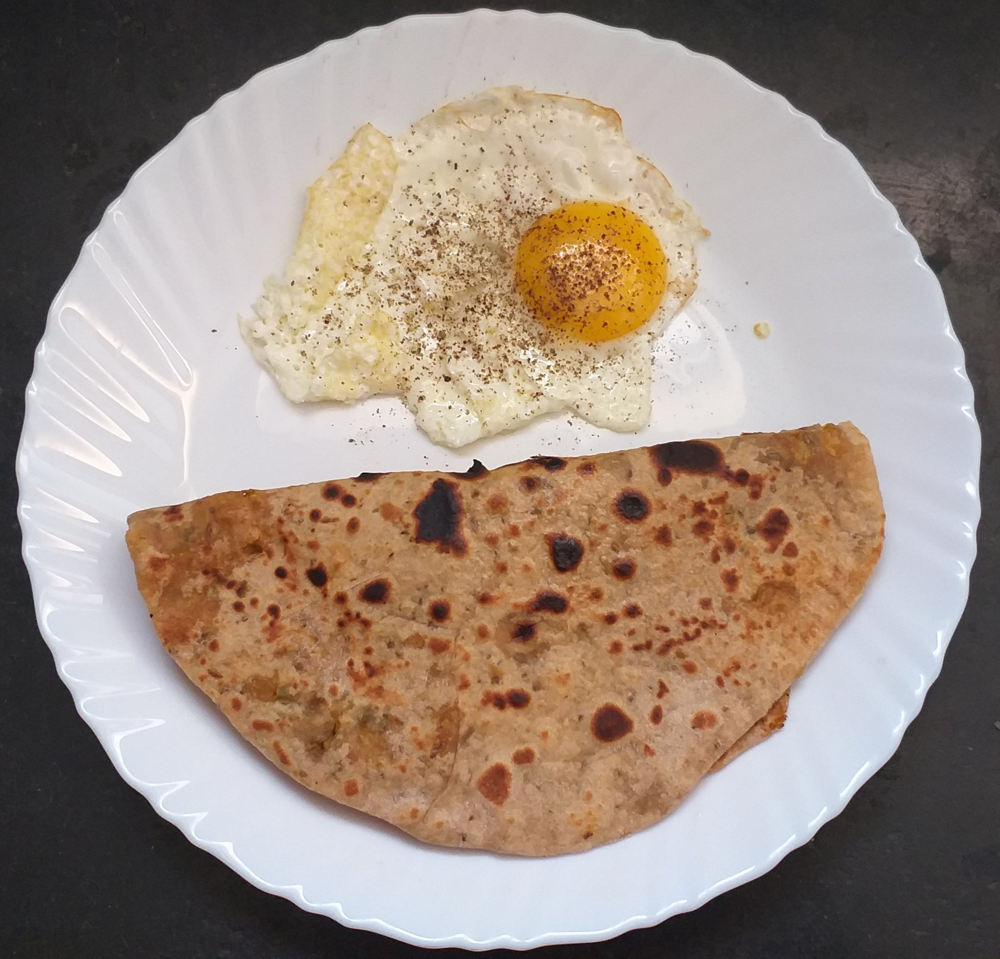
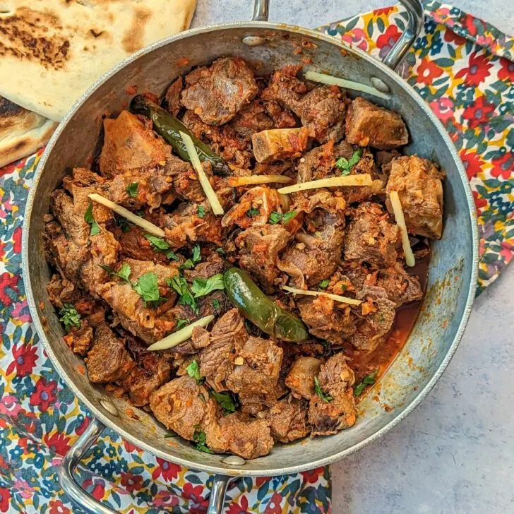
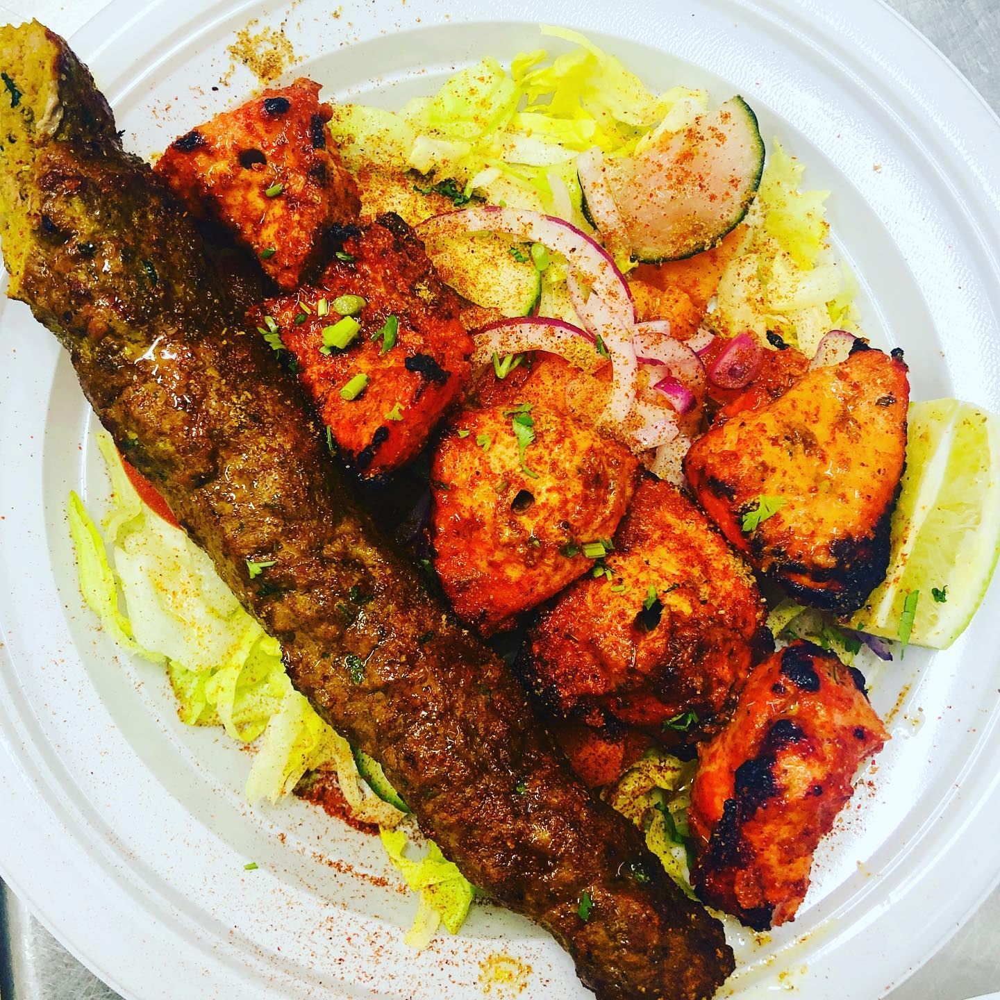
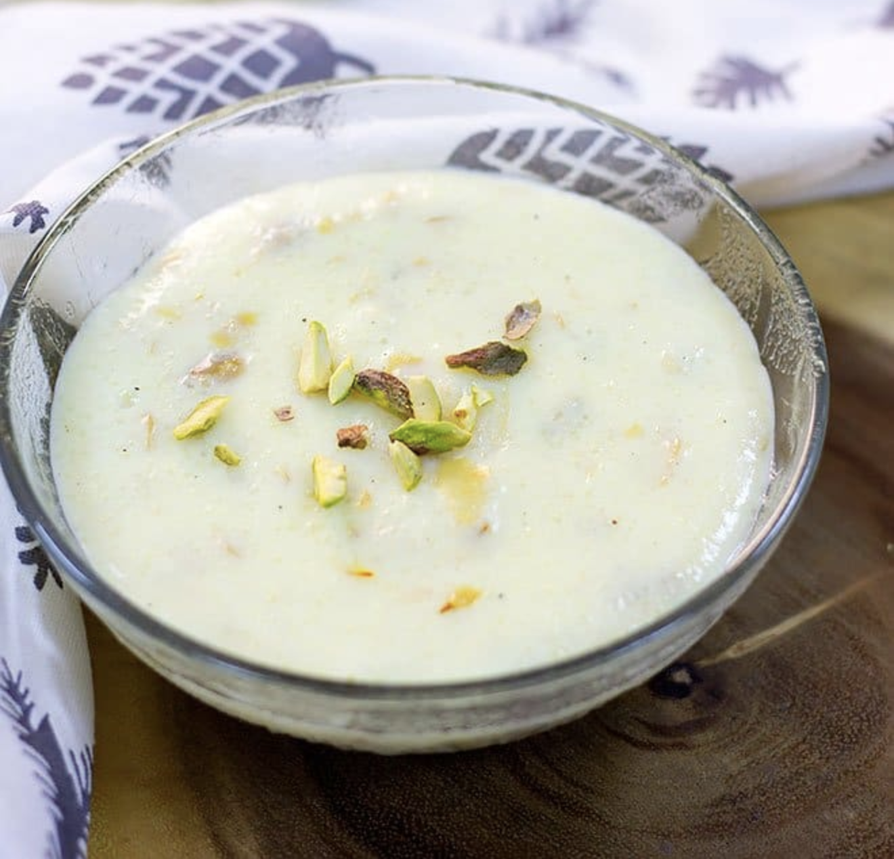

| Meal Type | Recipe Name | Image | Ingredients | Instructions |
|---|---|---|---|---|
| Breakfast | Paratha with Half-Fried Egg |  |
|
1. Roll out the paratha dough into a circle. 2. Cook the paratha on a hot griddle with oil until golden brown. 3. Fry the egg until the whites are set but the yolk is still runny. 4. Serve the half-fried egg on top of the paratha. Season with salt and pepper. |
| Lunch | Mutton Karahi |  |
|
1. Heat oil in a pan and sauté onions until golden brown. 2. Add mutton pieces and cook until browned. 3. Add chopped tomatoes, green chilies, and spices. Cook until tomatoes are soft. 4. Garnish with coriander leaves and serve hot. |
| Dinner | Seekh Kabab and Tikka Boti |  |
|
1. Marinate minced meat with spices and yogurt. 2. Thread the meat onto skewers and grill until cooked through. 3. Serve hot with Roghni Naan. |
| Dessert | Kheer |  |
|
1. Boil rice in milk until soft and mushy. 2. Add sugar and cook until thickened. 3. Garnish with nuts and raisins. |